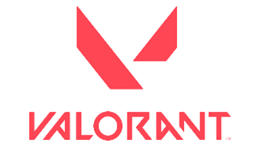

About Valorant
Valorant este un shooter tactic dezvoltat si publicat de Riot Games.
Valorant se inspiră din Seria Counter-Strike care împrumută mai multe mecanisme, cum ar fi meniul de cumpărare, modelele de spray și inexactitatea în timpul mișcării.
Download free "https://playvalorant.com/".
Există o mare varietate de agenți care se pot juca în joc. Agenții sunt împărțiți în 4 roluri: Dueliști, Santinele, Inițiatori și Controlori. Fiecare agent are un rol diferit, care indică modul în care este jucat de obicei agentul.
| Roluri | Descriere | Agenti |
|---|---|---|
| Duelist | Dueliștii sunt specializați în atacarea și intrarea într-un loc pentru plasarea bombei pentru echipă. Dueliștii creează în principal spațiu pentru echipa lor în timp ce intră pe un site, le oferă colegilor de echipă informații și facilitează intrarea pe site. | Jett, Reyna, Phoenix, Raze, Yoru, Neon |
| Santinel | Santinelele sunt linia defensivă, care este specializată în blocarea site-urilor și protejarea coechipierilor de inamici. Abilitățile lor constau în principal din „obiecte” statice care sunt obstacole pentru inamici. | Sage, Chamber, Cypher, Killjoy |
| Initiator | Inițiatorii sunt specializați în spargerea pozițiilor defensive ale inamicului prin planificarea acestora. Abilitățile inițiatorilor pot consta în flash-uri dar și abilități care pot dezvălui locația inamicilor. | Sova, Breach, Fade, Gekko, KAY/O, Skye |
| Controller | Controlorii se specializează în „taierea unui teritoriu periculos pentru a-și pregăti echipa pentru succes.” Ei își folosesc abilitățile pentru a crea acoperire (smoke-uri) sau pentru a curăța zonele din spațiu crowd control ( controlat de inamici). | Omen, Viper, Harbor, Brimstone |